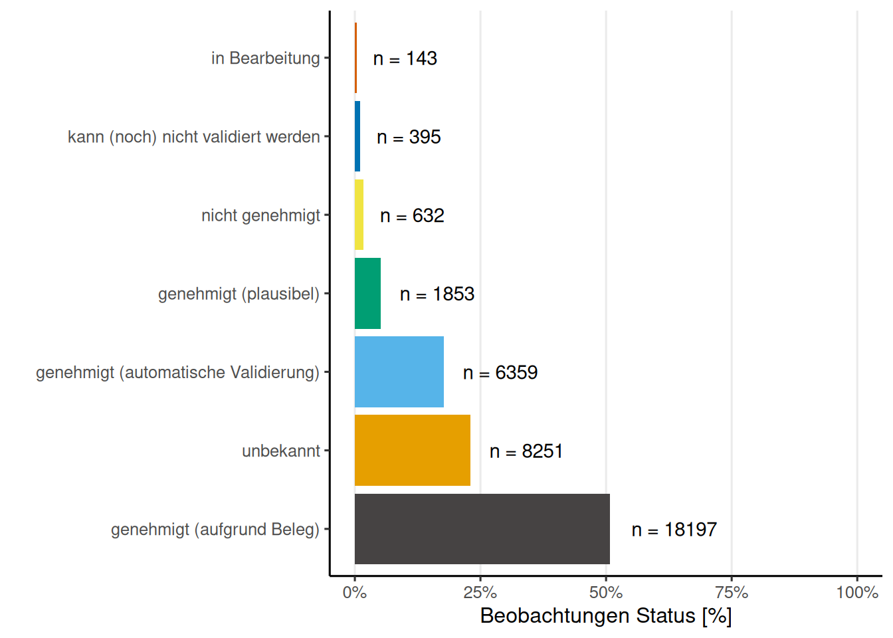

City Nature Challenges in Österreich, 25.-28. April 2025
Links zu den offiziellen Seiten: - City Nature Challenge Österreich - iNaturalist Projekt
Vergleich der Regionen
Die folgende Tabelle zeigt einen Vergleich der teilnehmenden Regionen anhand verschiedener Kennzahlen.
Beobachtungen nach Regnum (iNaturalist)
Die Grafik zeigt die absolute Anzahl der Beobachtungen pro Regnum (Reich), aufgeteilt nach den teilnehmenden Regionen.

Allgemeine Information
Insgesamt wurden 18239 Beobachtungen von 539 Beobachterinnen und Beobachtern hochgeladen. Dies ergibt einen Mittelwert von 33.8 und einen Median von 12 Beobachtungen pro Person. Auf Artebene (Spezies-Ebene) wurden 2120 unterschiedliche Arten beobachtet.

Beobachtungskarte
Fun Facts
Der/Die User/in (auch bekannt als Birder) anditiefenbach hat mit 58 Vogelbeobachtungen die meisten Beiträge in dieser Kategorie hochgeladen. Besonders häufig, nämlich 25 Mal, hat der/die User/in Sasa_Paaa die Art Salamandra salamandra beobachtet. Das Taxon mit dem längsten wissenschaftlichen Namen ist Taraxacum officinale s.l. (incl. all sect.) mit 43 Zeichen.
Top Beobachter/innen
Diese Liste zeigt die Beobachter/innen, geordnet nach der Gesamtzahl ihrer Beobachtungen (inklusive Mehrfachbeobachtungen derselben Art).
Top Bestimmer/Innen (iNaturalist)
Die hochgeladenen Beobachtungen gewinnen erst durch die wertvolle Arbeit der Bestimmer/innen an wissenschaftlicher Bedeutung. Ein großes Dankeschön an alle, die durch ihre Bestimmungen iNaturalist zu dem machen, was es heute ist!
Top Beobachter/innen mit den meisten unterschiedlichen Arten
Gezählt werden nur Beobachtungen, die mindestens auf Artebene bestimmt und als “Research Grade” (iNaturalist) eingestuft oder positiv validiert (Observation.org) wurden.
Top Taxa (Spezies-Ebene)
Diese Liste enthält die am häufigsten beobachteten und bereits auf Artebene bestimmten Taxa (“Research Grade” oder positiv validiert).
Unique Taxa mit Research-Grade
Einzigartige Funde, die nur von einer einzigen Person während der Challenge beobachtet und hochgeladen wurden, sind besonders erfreulich.
Raritäten (observation.org)
Observation.org verwendet eine eigene Einstufung für die Seltenheit von Beobachtungen, die sich von der iNaturalist-Einteilung unterscheidet. Die Verteilung dieser Raritätsstufen ist unten dargestellt.

Beobachtungen mit Rarität “selten” (observation.org)
Die folgende Liste zeigt Beobachtungen, die auf observation.org als “selten” eingestuft wurden.
Beobachtungs Qualität (iNaturalist)
iNaturalist teilt die Beobachtungsqualität in drei Stufen ein: - Zwanglos (casual): Beobachtungen, bei denen Datum, Ort oder ein Belegfoto/-ton fehlt. - Benötigt Bestimmung (needs_id): Beobachtungen, bei denen noch keine übereinstimmende Bestimmung durch mindestens zwei Personen vorliegt. - Forschungsqualität (research): Bestätigte Beobachtungen auf Artebene.
Beobachtungen Phylum (iNaturalist)

Insecta - Ordnungen (iNaturalist)
Beobachtungen mit Konflikt Bestimmungen (iNaturalist)
Diese Tabelle listet Beobachtungen auf, bei denen Uneinigkeit über das bestimmte Taxon zwischen den Usern besteht.
Verifizierung Status (observation.org)
Observation.org klassifiziert Beobachtungen nach ihrem Validierungsstatus.

Beobachtungen die nicht Verizifiert werden können (observation.org)
Hier werden Beobachtungen von observation.org angezeigt, die nicht verifiziert werden konnten oder deren Bestimmung nicht genehmigt wurde.